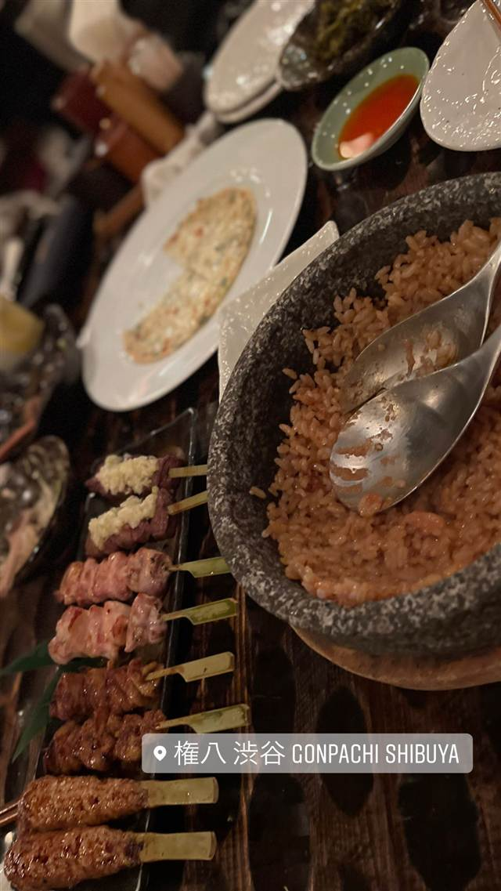

権八 渋谷 GONPACHI SHIBUYA
炭火焼きの串焼きと店内手打ちそばを味わえる創作和食
権八 渋谷 GONPACHI SHIBUYA
権八は、渋谷や西麻布に串焼き・そば・寿司の大箱和食ダイニングを展開するグローバルダイニング（1973年創業、長谷川耕造氏）が2000年に立ち上げたブランド。西麻布店が日米首脳会談や映画『キル・ビル』ゆかりの店として世界的に知られており、渋谷店も同じコンセプトの炭焼き串焼き・手打ちそばを楽しめる。
TRIVIA
豆知識
- 系列店の権八西麻布は2001年、ブッシュ元米大統領と小泉元首相の「居酒屋会談」の舞台になった
- 権八西麻布は映画『キル・ビル』の乱闘シーンのモデルになったとされ、海外にもファンが多い
REVIEWS
世間の評判
3.25食べログ
眺望の良さと混雑時の待ち時間
- 渋谷を見渡せる高層階からの眺めと落ち着いた雰囲気を評価する声が多い
- 焼き鳥や蕎麦、寿司まで揃う多彩なメニューを評価する声が非常に多い
- 外国人観光客にも対応したスムーズな案内や予約対応を評価する声が多い
- 繁忙期は外国人観光客も多く混雑時は待ち時間が生じやすいという声もある
食べログ 口コミ647件
| 創業 | 「権八」ブランドは2000年誕生（グローバルダイニングが展開） |
|---|---|
| 系譜 | 権八西麻布などと同じ株式会社グローバルダイニング（創業1973年、長谷川耕造社長）系列の創作和食ダイニング |
| 看板 | 炭焼き串焼き、手打ちそば、寿司、炒飯などの創作和食 |
| こだわり | 炭火で焼く串焼きや揚げたて天ぷら、店内で手打ちする蕎麦にこだわる |
| どこから | 都心 |
| 予算 | 夜 ¥5,000～¥5,999 |
| 予約 | 予約可 |
| 場所 | 渋谷・神泉 東京都渋谷区円山町3-6 E・スペースタワー14F |
| メモ | 渋谷・神泉駅近くの高層階に入る大箱の和食ダイニング |
食べたもの：串焼きと炒飯
NEARBY
近い店・同じ系統の店
-
 パスタ 渋谷
KURA 渋谷店
元プロゴルファーら異業種出身者が始めた、もちもち生パスタ50種以上
昼 ¥1,000～¥1,999 夜 ¥2,000～¥2,999
パスタ 渋谷
KURA 渋谷店
元プロゴルファーら異業種出身者が始めた、もちもち生パスタ50種以上
昼 ¥1,000～¥1,999 夜 ¥2,000～¥2,999
-
 ベトナム 渋谷駅
ミス・サイゴン（MISS SAIGON）
ベトナム人スタッフが作る野菜たっぷりのフォーとバインセオ
夜 ～¥5,999
ベトナム 渋谷駅
ミス・サイゴン（MISS SAIGON）
ベトナム人スタッフが作る野菜たっぷりのフォーとバインセオ
夜 ～¥5,999
-
 台湾 恵比寿
七一飯店
週1回だけの営業だった名残の店名、看板は魯肉飯
昼 ¥1,000～¥1,999 夜 ¥1,000～¥1,999
台湾 恵比寿
七一飯店
週1回だけの営業だった名残の店名、看板は魯肉飯
昼 ¥1,000～¥1,999 夜 ¥1,000～¥1,999
-
 コーヒー 渋谷
Café Kitsuné Shibuya
パリ発ブランドのカフェ、狐にちなむ名を持つバゲットサンド
昼 ¥1,000～¥1,999 夜 ¥1,000～¥1,999
コーヒー 渋谷
Café Kitsuné Shibuya
パリ発ブランドのカフェ、狐にちなむ名を持つバゲットサンド
昼 ¥1,000～¥1,999 夜 ¥1,000～¥1,999
-
 コーヒー 渋谷駅
Roasted COFFEE LABORATORY 渋谷神南店
店内焙煎の豆で淹れる「MADE IN SHIBUYA」のコーヒー
昼 ¥1,000～¥1,999 夜 ¥1,000～¥1,999
コーヒー 渋谷駅
Roasted COFFEE LABORATORY 渋谷神南店
店内焙煎の豆で淹れる「MADE IN SHIBUYA」のコーヒー
昼 ¥1,000～¥1,999 夜 ¥1,000～¥1,999
-
 カフェ 渋谷
JINNAN CAFE 渋谷店
ドラマや映画のロケ地に頻繁に使われるとろけるスフレパンケーキ
昼 ¥1,000～¥1,999 夜 ¥1,000～¥1,999
カフェ 渋谷
JINNAN CAFE 渋谷店
ドラマや映画のロケ地に頻繁に使われるとろけるスフレパンケーキ
昼 ¥1,000～¥1,999 夜 ¥1,000～¥1,999
ONSEN & SAUNA